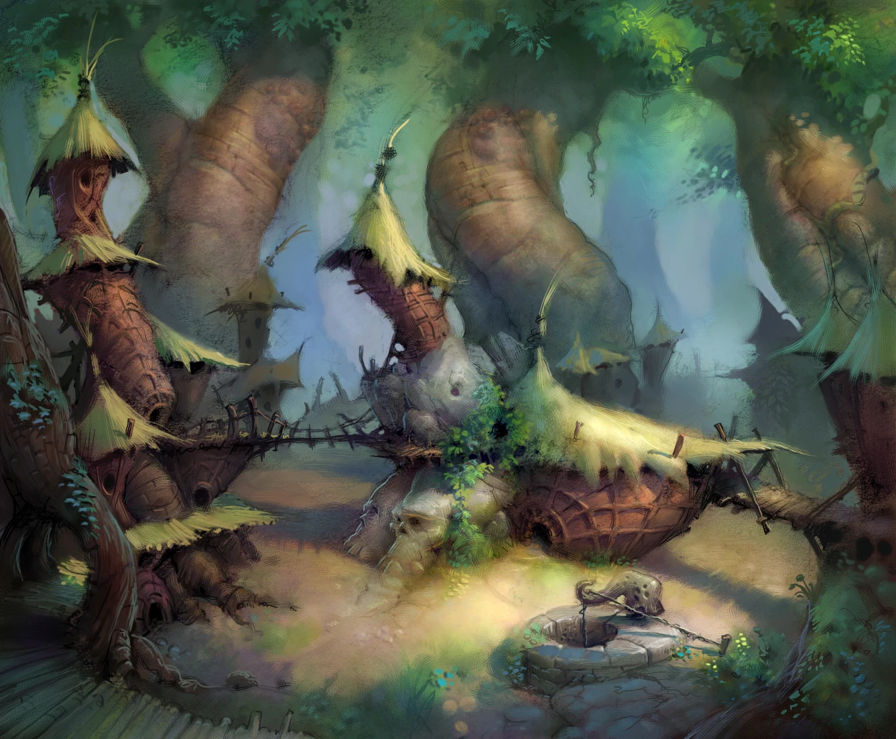

Released on October 15, 2003. A boy named Tak must save his village from the evil shaman Tlaloc with the help of powerful Juju spirits in this collectathon platformer.
Overview
Gameplay
In this game, you explore a fairly open world, platforming through various scenic locales and
defeating dangerous creatures to collect the magical items you will need to save the day. This
game makes use of an open level structure, giving the player the choice of where to go and which
collectibles
to look for. In addition to basic combat, this game features interesting puzzles where Tak must
use the unique behavior of the various animal species that populate the world to his advantage.
Story
Tak is nothing more than the errand boy of Jibolba, the head shaman of the Pupununu village.
However, when the evil shaman Tlaloc turns everyone else in the village into sheep,
with Lok, the great and mighty warrior of the Pupununu people, in no shape to be of any help, it's
up to Tak to venture across this strange world, seek the help of powerful Juju spirits, and save his
village.
Art/Presentation
Tak and the Power of Juju employs a unique cartoony visual style with a painterly look from the
wonderful mind of Todd Harris, integrating lots of natural scenery with tribal imagery, drawing
inspiration from many cultural backgrounds.

This game's cast features some top-tier voice talent. Including cartoon voice acting giants such
as Jason Marsden as Tak, Patrick Warburton as Lok, and Rob Paulsen as Tlaloc and Dead Juju.
The music in this game is a unique blend of genres, combining traditional tribal sounds with the
heavy drums and guitars of modern rock.
My Opinions
This is the game that made me fall in love with games. The sense of exploration you get from running
across treetops and jumping through canyons still holds up to this day. The writing and voice
acting is easily the best aspect of this game, being hilarious all the way through, even if it
relies a bit too heavily on toilet humor at times (product of being a Nickelodeon property). The
music is also just straight up amazing, but although there are theories to their identity, the
composer goes uncredited to this day. Although the platforming and combat itself is rudimentary, the
rest of the game more than makes up for it.